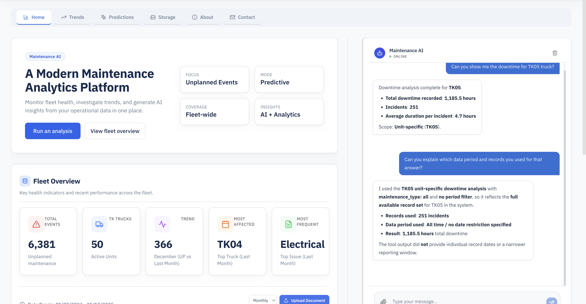

Maintenance AI
Enterprise maintenance analytics platform
Helped mining maintenance teams investigate fleet health, ask operational questions, and generate AI-assisted reports from scattered maintenance data.
- Mapped pain points across maintenance, IT, and operations.
- Designed agent actions for downtime, event counts, SLA, and component analysis.
- Supported product testing, documentation, and user-facing report outputs.
RAG
SQL
Tool Calling
Azure
FastAPI
Stack: Microsoft Agent Framework, Azure AI Foundry, Azure App Service, Azure PostgreSQL, Azure SQL, Redis, Python, FastAPI, React, RAG, SQL, API tools, Power BI reporting.
View backend API docs